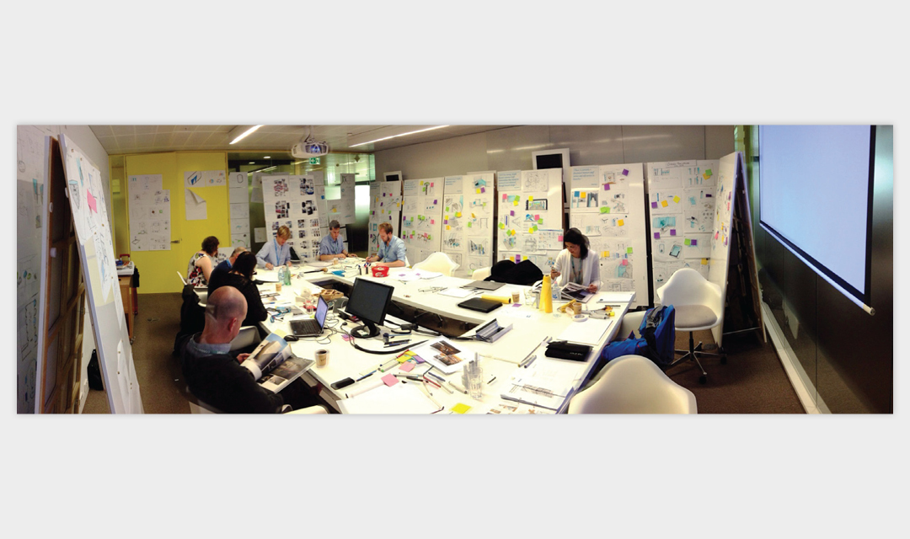
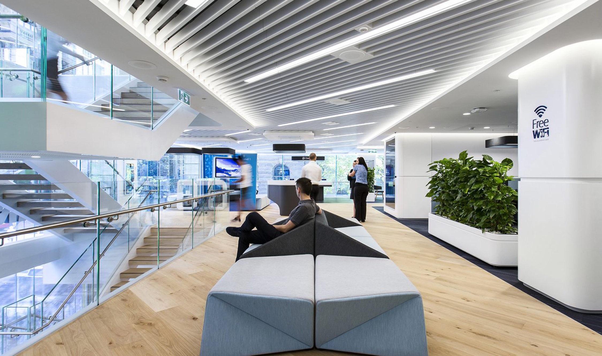
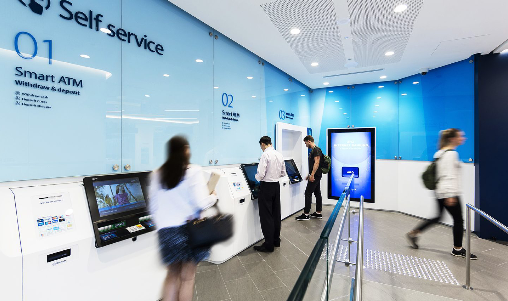
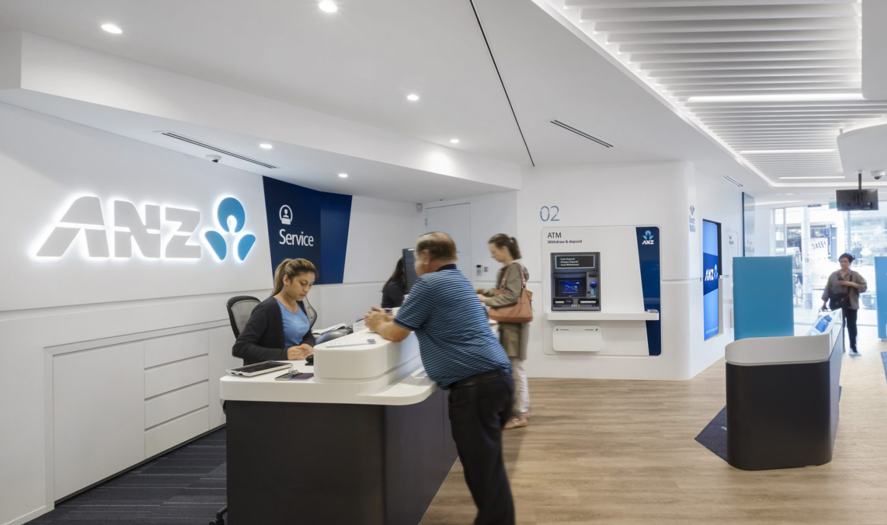
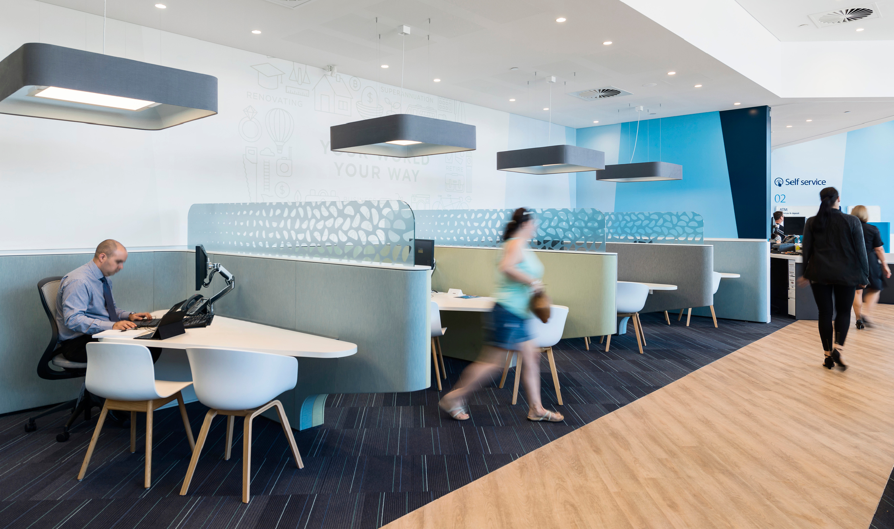
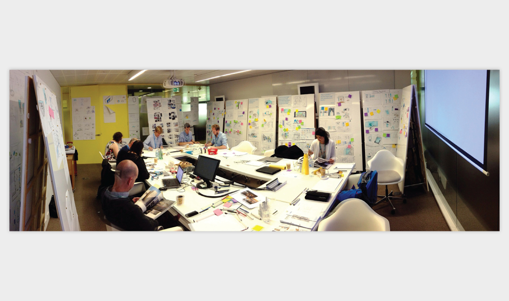
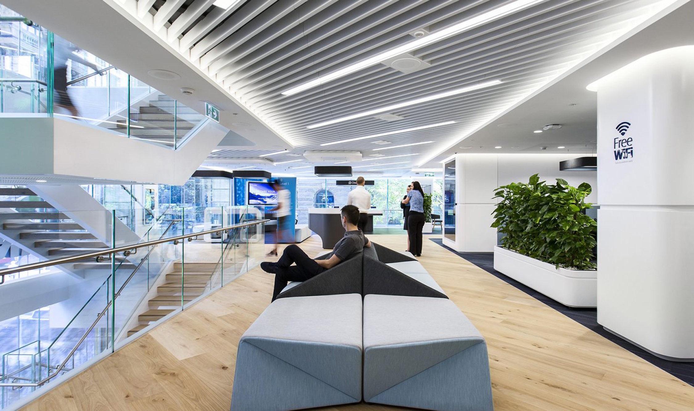
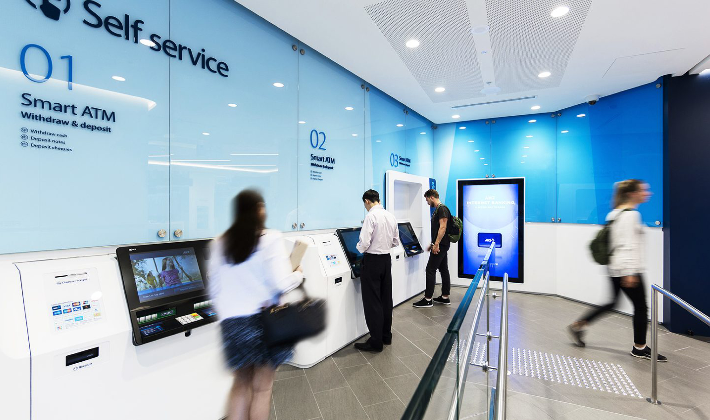
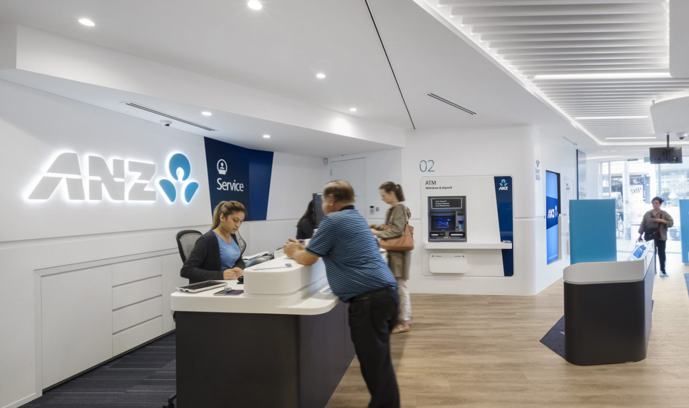
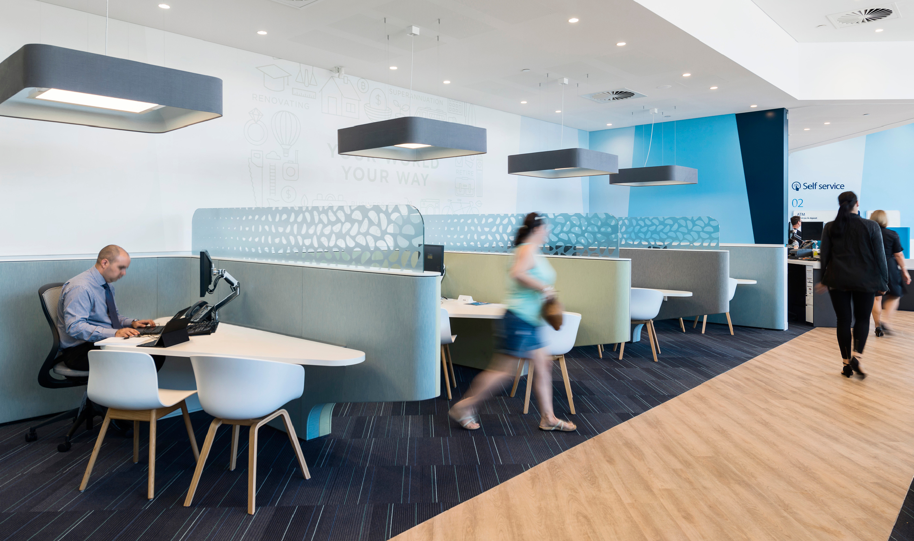

ANZ Digital Branches
Intern at Blue Sky for ANZ Bank, 2014-15
Internship
Experience design
Spatial design
ANZ bank contracted Blue Sky to lead the design their new digital retail branches in Australia with the goal of unifying their retail banking experience and transitioning the branches to a more digitally focused design.
As an intern at Blue Sky, I participated in concept development and conducted an in-depth study of customer flows and zoning to improve navigation and space efficiency. Careful consideration of customer touch points and technology deployment improved the functionality of branches and provided a next generation banking experience for customers.
The design was rolled out to ANZ branches across Australia, including their flagship branch at 20 Martin Place in Sydney.
 








